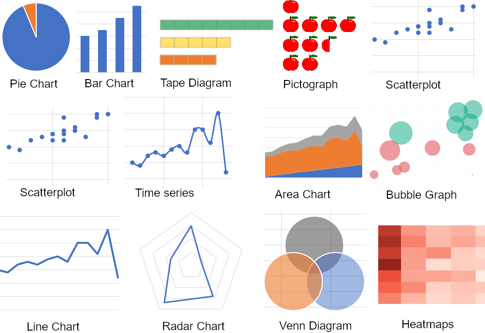

Project Overview
This project focuses on customer segmentation analysis for a company operating in Australia. The analysis aims to categorize customers based on various attributes including age, wealth, industry, location, purchasing behavior, and loyalty. The goal is to gain insights into different customer groups to inform targeted marketing strategies and improve customer relationship management.
Technical Implementation
The analysis is presented through a comprehensive dashboard, likely built using a business intelligence tool such as Tableau. The dashboard integrates multiple data sources and visualization types:
- Bar charts for sales breakdowns by age, wealth segment, industry, and state
- Scatter plot for recency vs monetary value analysis
- Map visualization for geographic distribution of customers
- Tables for top products and customer segmentation details

Challenges
These are the challenges encountered during the analysis
- Integrating diverse data sets to create meaningful customer segments
- Defining appropriate metrics for segmentation (e.g., recency, monetary value)
- Balancing granularity of segmentation with actionable insights
- Visualizing complex, multidimensional customer data effectively
Solution
The implemented dashboard addresses these challenges by:
- Providing multiple perspectives on customer segmentation (demographic, geographic, behavioral)
- Using a recency vs monetary value scatter plot to visualize customer value and engagement
- Clearly defining customer segments (Platinum, Very Loyal, Becoming Loyal, etc.)
- Combining high-level overviews with detailed breakdowns of sales and customer counts

Projected Results & Impacts
Impacts Expected
- More targeted marketing campaigns based on customer segment characteristics
- Improved customer retention strategies, especially for high-value segments
- Enhanced product development focused on top-selling items for key segments
- Potential for increased sales and customer lifetime value through personalized approaches
Lessons Learned
Key Takeaways
- The importance of multi-faceted customer segmentation for a comprehensive understanding
- The value of visualizing customer data geographically for regional insights
- The effectiveness of combining behavioral (recency, monetary) and demographic segmentation
- The need for clear, actionable customer segments to drive business strategies
Summary
This customer segmentation analysis provides a strong foundation for data-driven marketing and customer relationship management. Future iterations could potentially include predictive analytics to forecast customer behavior or churn risk, and more detailed analysis of segment-specific preferences and purchasing patterns.